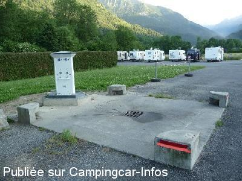

ASN = Aire de services avec stationnement nuit possible de :
ARRENS MARSOUS
(N° 786)
Accès/adresse :
Route d'Azun, D918
65400 ARRENS MARSOUS
65400 ARRENS MARSOUS
Latitude : (Nord) 42.95834° Décimaux ou 42° 57′ 30′′
Longitude : (Ouest) -0.20747° Décimaux ou 0° 12′ 26′′
Tarif : 2016
Eau : 2 € / 100 L
Électricité : 2 € /H
Type de borne : RACLET
Services :


Supérette
Restaurant
Autres informations :
Ouvert toute l'année
6 emplacements goudronnés, éclairés, partiellement ombragés, un peu en pente
Tel mairie : +33(0)562 970 254
mairie.arrens-marsous@wanadoo.fr
Le 21/07/2015 par Guy et Jacqueline

Le 09/08/2012 par cathare
Le 14/03/2003 par B.MOQUETTE
Le 14/03/2003 par B.MOQUETTE
de
lolo33
le 24/04/2016 :
On a passé une nuit le 19 Avril près de là au lac du Teich (le top!) et je confirme que l'accès est difficile à cause des plots mais que tout est gratuit;
Du coup, pour remercier la municipalité, on a fait des achats en ville.
On a passé une nuit le 19 Avril près de là au lac du Teich (le top!) et je confirme que l'accès est difficile à cause des plots mais que tout est gratuit;
Du coup, pour remercier la municipalité, on a fait des achats en ville.
de
Guy et Jacqueline
le 21/07/2015 :
passé 2 jours en Juillet l'aire de service est bien mais l'endroit ou l'on nous fait stationner est un véritable dépotoir des services municipaux :: dommage , nous avons préféré poursuivre notre séjour au camping à coté derrière le proxi de l'autre coté de la rivière
passé 2 jours en Juillet l'aire de service est bien mais l'endroit ou l'on nous fait stationner est un véritable dépotoir des services municipaux :: dommage , nous avons préféré poursuivre notre séjour au camping à coté derrière le proxi de l'autre coté de la rivière
de
xtian74
le 11/07/2015 :
Nous avons passé une semaine dans le secteur mais nous avons bivouaqué au frais en montagne. Passage à l'aire pour les services à plusieurs reprises. Ils sont toujours gratuits, serait-ce définitif ?
Nous avons passé une semaine dans le secteur mais nous avons bivouaqué au frais en montagne. Passage à l'aire pour les services à plusieurs reprises. Ils sont toujours gratuits, serait-ce définitif ?
de
Xtian74
le 14/11/2014 :
Passage les 11 & 12/11/2014. Contrairement à ce qu'indique la base de données de CCInfos, pour le stationnement seulement 6 à 8 emplacements sur goudron et non éclairés. Pour les services, la zone est en effet encadrée par 4 blocs de béton et il convient d'y prêter attention en manœuvrant. Apparemment, le paiement des services est resté bloqué et ceux-ci se font sans avoir à payer (un dysfonctionnement peut-être temporaire?).
Nous avons passé deux nuits calmes et froides (température inférieure à 0°) en compagnie d'un CC vendéen.
(Nombre d'emplacements mis à jour, Fab)
Passage les 11 & 12/11/2014. Contrairement à ce qu'indique la base de données de CCInfos, pour le stationnement seulement 6 à 8 emplacements sur goudron et non éclairés. Pour les services, la zone est en effet encadrée par 4 blocs de béton et il convient d'y prêter attention en manœuvrant. Apparemment, le paiement des services est resté bloqué et ceux-ci se font sans avoir à payer (un dysfonctionnement peut-être temporaire?).
Nous avons passé deux nuits calmes et froides (température inférieure à 0°) en compagnie d'un CC vendéen.
(Nombre d'emplacements mis à jour, Fab)
de
ocral Jack
le 16/08/2011 :
le 06/08/2011 aire délimitée par des bornes en béton, il faut faire attention avec le tuyau d'eau propre: il se tire comme une pompe d'une station service.Et pour l'hygième il y a un bouton qui fait fonctionner un multié jet qui rince l'aire après vidange des eaux grises.
le 06/08/2011 aire délimitée par des bornes en béton, il faut faire attention avec le tuyau d'eau propre: il se tire comme une pompe d'une station service.Et pour l'hygième il y a un bouton qui fait fonctionner un multié jet qui rince l'aire après vidange des eaux grises.
de
camusard 79
le 06/08/2010 :
Nous y avons passé 2 nuits après la descente de l'Aubisque et du Soulor en juillet. Très propre rien à dire sauf la proximité des containers poubelles. Petit village charmant : de bons commerçants et une belle vue sur la montagne et de belles balades aux alentours.
Nous y avons passé 2 nuits après la descente de l'Aubisque et du Soulor en juillet. Très propre rien à dire sauf la proximité des containers poubelles. Petit village charmant : de bons commerçants et une belle vue sur la montagne et de belles balades aux alentours.
de
Xtian74
le 30/09/2009 :
Nous y avons fait les services après avoir bivouaquer non loin. Au Col des Bordères, un jeune couple remonte la ruine d'une bergerie. On peut leur acheter des légumes bio, des œufs et des poulets. Excellents produits !
Au village, à la Belle Pirène, près de la Maison du Parc, vaste choix de produits régionaux de haute qualité.
Nous y avons fait les services après avoir bivouaquer non loin. Au Col des Bordères, un jeune couple remonte la ruine d'une bergerie. On peut leur acheter des légumes bio, des œufs et des poulets. Excellents produits !
Au village, à la Belle Pirène, près de la Maison du Parc, vaste choix de produits régionaux de haute qualité.
de
Christian Dougère
le 25/08/2009 :
Nous y avons passé 15 jours en août. C'est parfait. Calme même la nuit. Il y a les poubelles qui gâche en peu la vue, mais les montagnes sont si belles. Emplacement parfait pour des balades aux lacs de tech ou d'estrein, pour tous les cols avoisinants.
Nous y avons passé 15 jours en août. C'est parfait. Calme même la nuit. Il y a les poubelles qui gâche en peu la vue, mais les montagnes sont si belles. Emplacement parfait pour des balades aux lacs de tech ou d'estrein, pour tous les cols avoisinants.
de
alamano
le 16/08/2009 :
Aire parfaite et village accueillant. La boulangère fait même cadeau de 10 ct si vous ètes à court...
Mais, contrairement à un autre avis, SVP ne montez pas passer la nuit au col: il y a trop d'abus et les barres de hauteur vont nous tomber dessus, on ne pourra plus se garer, même de jour.
Aire parfaite et village accueillant. La boulangère fait même cadeau de 10 ct si vous ètes à court...
Mais, contrairement à un autre avis, SVP ne montez pas passer la nuit au col: il y a trop d'abus et les barres de hauteur vont nous tomber dessus, on ne pourra plus se garer, même de jour.
de
Abadie
le 18/05/2008 :
Nous y avons passé une nuit ce mois ci, aire très bien conçue, une très belle vue, une supérette à moins de 100m, une cabine téléphonique également très proche. Je ne saurai que trop la conseiller.
Nous y avons passé une nuit ce mois ci, aire très bien conçue, une très belle vue, une supérette à moins de 100m, une cabine téléphonique également très proche. Je ne saurai que trop la conseiller.
de
agnès16
le 27/03/2008 :
Sommes passé le 23 et 24 mars 2008. Super endroit, bien conçu et pratique. Nuit calme et au réveil de la neige. C'était super !!
Sommes passé le 23 et 24 mars 2008. Super endroit, bien conçu et pratique. Nuit calme et au réveil de la neige. C'était super !!